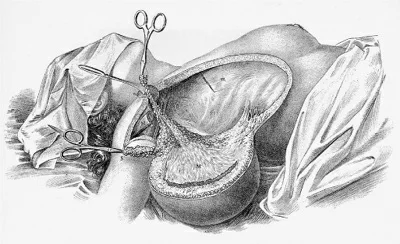

The war against cancer becomes a war inside medicine
The story begins shortly after Sidney Farber's death in 1973. The National Cancer Act has created extraordinary expectations, but cancer medicine has become deeply divided. Surgeons, radiation specialists, and chemotherapy researchers disagree not only about treatment, but also about authority: who should decide how cancer is fought?
Mukherjee chooses one controversy as a perfect example: radical mastectomy, an operation that had dominated breast-cancer treatment for nearly a century. William Halsted and his followers had believed that removing the breast, chest muscles, and nearby lymph nodes would prevent cancer from spreading. Later surgeons extended the procedure even further, sometimes removing portions of the chest wall, ribs, and collarbone.
These operations caused permanent disfigurement, shoulder weakness, swelling, and long recoveries. Yet their advocates were convinced that the more tissue removed, the greater the likelihood of cure. The uncomfortable question was whether that belief had actually been demonstrated.
Understanding Halsted's centrifugal theory
Halsted imagined cancer spreading outward in an orderly sequence. A breast tumor would first invade the surrounding breast, then the lymph nodes under the arm, and finally distant organs such as the liver or lungs.
Imagine a fire spreading from a central room into the adjoining rooms of a building. If firefighters remove every nearby source of fuel before the flames advance, they might stop the fire. Halsted's surgery followed similar logic: remove every possible path of local spread before the cancer reaches the rest of the body.
The theory was appealing because it made cancer look like a problem that an excellent surgeon could solve with a large enough operation. But it rested on a dangerous assumption: that distant spread happens only after progressive local spread. If malignant cells could reach distant organs early, removing extra muscles and tissue would not bring those cells back.
The real test was not whether the operation removed more cancer locally. It was whether it improved survival compared with less extensive treatment.
Geoffrey Keynes questions the knife (1924)
In 1924, an English doctor named Geoffrey Keynes treated a 47-year-old woman with an ulcerated breast cancer. The woman was frail, and Keynes feared that a huge radical operation might kill her. Instead, he placed radium in the breast to irradiate the tumor.
To his surprise, the ulcer began to heal and the mass became smaller and less fixed. He realized that he might be able to combine radiation with a smaller operation, removing the visible lump rather than the entire breast and surrounding structures.
Between 1924 and 1928, Keynes explored variations of this approach. In selected patients, local surgery followed by radiation seemed to provide outcomes comparable to those reported by the radical surgeons, but with much less bodily destruction.
Keynes suggested cautiously that extensive removal might not always be necessary. His claim was modest in words but revolutionary in meaning: perhaps a patient did not need the largest possible surgery to get the best possible result.
Why American surgeons dismissed the idea
Halsted's followers reacted to Keynes with ridicule. They called his limited procedure a lumpectomy, a term initially used dismissively—as if removing a lump were a trivial operation rather than serious cancer treatment.
Why was it so difficult to consider his evidence? Radical surgery was more than a technique. It had become a professional tradition and a source of identity. Surgeons were trained to perform difficult operations with extraordinary precision; the extent of the operation often appeared to symbolize the seriousness of their commitment.
A surgeon who questioned radical mastectomy was questioning the judgment of teachers, colleagues, and famous predecessors. And some patients, understandably terrified of cancer, actively requested the most aggressive treatment available.
This creates an important distinction: a procedure can feel reassuring because it is aggressive without actually being more effective. The amount of treatment is not the same thing as the amount of benefit.
George Crile sees the biological problem (1953)
In 1953, an American surgeon named George Barney Crile Jr. attended a lecture about Keynes's work. Crile belonged to a family deeply embedded in American surgical tradition, but he had begun doubting radical mastectomy himself.
Animal experiments were revealing that malignant cells did not necessarily travel through a predictable chain of lymph nodes before reaching distant organs. Sometimes microscopic deposits appeared in faraway tissues even when nearby nodes seemed uninvolved.
This suggested two different situations. In a woman whose cancer was truly confined to the breast, a smaller, adequate operation might remove it. In a woman whose cancer had already spread invisibly through the body, even the largest local operation could fail to cure her.
Radical mastectomy was potentially too much surgery for one patient and too little treatment for another. Crile began arguing that women should not automatically undergo the most extensive operation.
Why anecdotes could not settle the argument
Keynes and Crile had persuasive observations, but a few successful patients could not prove that one method was equivalent to another. Patients differ in tumor size, age, stage, and many other factors. A surgeon might unconsciously reserve a smaller operation for less advanced cases, making the outcomes look better.
The solution was a controlled clinical trial: compare groups of similar patients treated by different methods, then follow them long enough to measure recurrence, metastasis, and death.
The chapter also explains a difficult scientific problem: it is much harder to prove that two treatments have similar outcomes than to point to a few successful operations.
Suppose five women receive radical surgery and five receive a smaller operation. If no one dies during the next year, that tells us very little. The study is too small and too short. By contrast, a large number of patients followed over many years can provide much stronger evidence.

What statistical power means
Mukherjee introduces statistical power, building on work by Jerzy Neyman and Egon Pearson. In simple terms, power describes how well a study can detect a real difference if that difference exists.
A small study might fail to find a difference not because the treatments are equally good, but because the study does not have enough information. A larger study is generally better able to detect meaningful differences.
| Study design | What the result can tell us |
|---|---|
| Five patients in each group | A missing difference could easily be due to chance |
| Hundreds of well-compared patients | More credible information about recurrence and survival |
| Long follow-up | Can reveal disease returning years after surgery |
| Random treatment assignment | Helps prevent patient selection from distorting the comparison |
The irony was that running a sufficiently large trial required cooperation from surgeons who were most devoted to the traditional operation. The social power of famous surgeons stood in the way of the statistical power needed to test their beliefs.
Bernard Fisher enters the controversy
A surgeon named Bernard Fisher became the person capable of organizing this challenge from inside the profession. Fisher had trained within the tradition of American surgery, but he came to believe that Halsted's theory did not match cancer biology.
He wanted a randomized study comparing more extensive and less extensive approaches. But persuading surgeons to enroll women in such a trial proved extremely difficult. Many considered it unethical to withhold what they assumed was the best operation, even though they had never proved its superiority.
In 1967, Fisher became chair of the National Surgical Adjuvant Breast and Bowel Project (NSABP), a network of hospitals capable of collaborating on large trials. The organization gave him the infrastructure needed to ask questions that no individual surgeon could answer convincingly.
For Fisher, decades of a surgeon's personal experience were not a substitute for comparative evidence.
Patients begin challenging medical authority
By the late 1960s and early 1970s, women were increasingly challenging the idea that physicians should make every decision about their bodies. Medical feminism, patient advocacy, and new public scrutiny created pressure for more honest discussions of treatment options.
Mukherjee highlights women including Rachel Carson, Betty Rollin, and Rose Kushner, who questioned radical mastectomy. Rollin and Kushner used books, articles, public appearances, and confrontation to demand better evidence. They asked why such a disfiguring operation remained standard when its benefits had not been properly tested.
This changed the debate. Women were no longer silent bodies on an operating table. They were participants asking what the risks were, what the alternatives were, and whether doctors actually knew which treatment worked better.
The book does not suggest that every less extensive treatment is suitable for every patient. Its point is that patients deserve evidence-based choices, not an automatic procedure defended merely by tradition.
The NSABP-04 trial finally begins
Fisher's group eventually organized a major randomized trial, commonly called NSABP-04, involving 1,765 women at 34 centers in the United States and Canada.
The study compared three approaches described in the book:
- Radical mastectomy.
- Less extensive or simple mastectomy.
- Surgery combined with radiation.
Recruitment was exhausting. Many surgeons refused to participate, and Canadian centers were needed to help reach the necessary number of patients. Fisher spent about a decade gathering and evaluating evidence.
This time, doctors would not decide the answer by reputation, technical pride, or the appearance of a neatly emptied surgical field. They would judge the actual outcomes experienced by women over time.
The results overturn a century of confidence (1981)
In 1981, the trial's results became public. The book reports no statistically meaningful difference among the compared treatment groups in the major outcomes measured, including survival and distant recurrence.
The radical operation had imposed greater physical costs, but did not provide the promised improvement in survival for the women studied.
This was not a claim that surgery itself was useless. Surgery remained vital for many breast cancers. The finding was more precise: removing extra muscles and structures did not automatically translate into better survival.
The distinction between local control and overall survival became crucial. An operation can reduce cancer returning near the original site without changing the risk from malignant cells that have already traveled elsewhere.
It also reminds us that a study's results apply to the kinds of patients and procedures actually investigated—not to every possible breast-cancer situation.

The enormous human cost of delayed evidence
Between 1891 and 1981, Mukherjee estimates that roughly 500,000 women underwent radical mastectomy. Many accepted the surgery because they believed it was their strongest chance of survival. Others had little meaningful choice.
Some were grateful to their surgeons. Some survived and may have attributed that survival to the operation's extremity. Many suffered permanent disfigurement and other complications.
The tragedy was that the question of whether the extra removal improved their survival had remained unanswered for decades. The profession had confused an operation's impressive technical achievement with proof of medical benefit.
When the evidence finally undermined radical mastectomy, a whole culture of cancer surgery began to change—not simply a single surgical procedure.
Key concepts and the chapter's deeper message
| Concept | Easy explanation |
|---|---|
| Radical mastectomy | Extensive removal of breast and surrounding tissues |
| Lumpectomy | Removal of a breast tumor with a margin of surrounding tissue |
| Randomized trial | Patients are assigned by chance to comparison groups |
| Statistical power | How well a study can detect a real treatment difference |
| Local recurrence | Cancer returning near its original location |
| Distant metastasis | Cancer appearing in organs away from its original site |
| Overall survival | Whether patients live longer, not just whether local tumors disappear |
Three ideas connect the entire chapter. First, the most aggressive treatment is not always the most effective. Second, medical culture and professional pride can delay the collection of evidence. Third, patients' questions can be as important as scientists' experiments in forcing medicine to improve.
Chapter takeaway: The collapse of radical mastectomy was not a defeat for cancer care. It was a victory for evidence and for women whose lives and bodies deserved more than medical tradition.